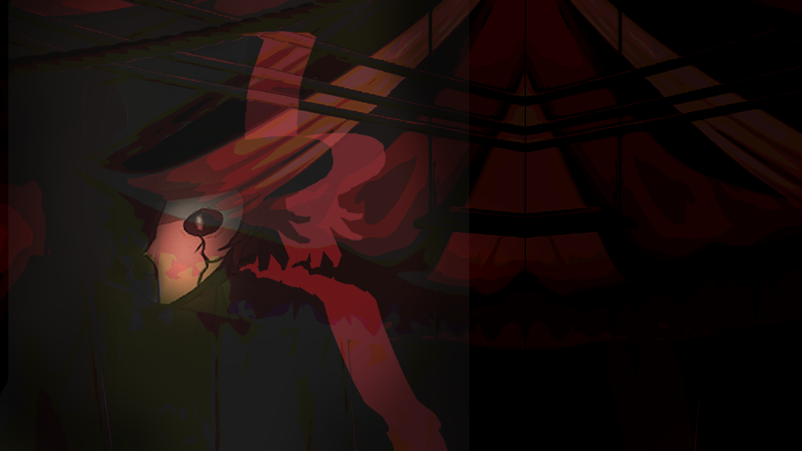
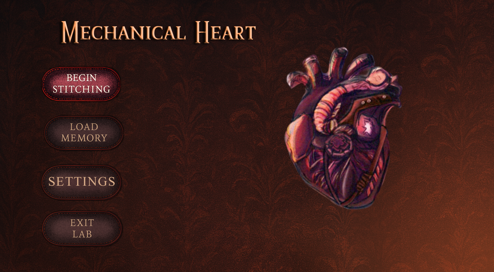

WIREFRAME & FLOW
Layout planning for dialogue hierarchy, controls, and interaction paths.
PORTFOLIO
Interface and motion studies focused on readability, atmosphere, and storytelling clarity across dialogue, menus, and transitions.
Layout planning for dialogue hierarchy, controls, and interaction paths.

Visual language passes for panel framing, icon shape, and typography rhythm.

Timing passes for dialogue transitions, hover states, and focus indicators.

Integrated screens tested over gameplay art for legibility and pacing.